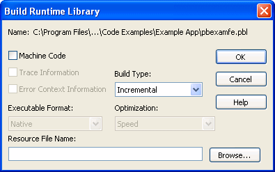

If you want your deployed target to use dynamic runtime libraries, you can create them in the Library painter.
For information about using runtime libraries, see Chapter 34, "Creating Executables and Components." That chapter also describes the Project painter, which you can use to create dynamic runtime libraries automatically.
 To create a runtime library:
To create a runtime library:
Select the library you want to use to build a runtime library.
Select Entry>Library>Build Runtime Library from the menu bar, or select Build Runtime Library from the library's pop-up menu.
The Build Runtime Library dialog box displays, listing the name of the selected library.

If any of the objects in the source library use resources, specify a PowerBuilder resource file in the Resource File Name box (see "Including additional resources").
Select other options as appropriate.
Most options are available only if you select Machine Code, which creates a DLL file. The default is Pcode, which creates a PBD file. For more information about build options, see "Executable application project options".
Click OK.
PowerBuilder closes the dialog box and creates a runtime library with the same name as the selected library and the extension .dll or .pbd.
When building a runtime library, PowerBuilder does not inspect the objects; it simply removes the source form of the objects. Therefore, if any of the objects in the library use resources (pictures, icons, and pointers)—either specified in a painter or assigned dynamically in a script—and you do not want to provide these resources separately, you must list the resources in a PowerBuilder resource file (PBR file). Doing so enables PowerBuilder to include the resources in the runtime library when it builds it.
For more on resource files, see "Using PowerBuilder resource files".
After you have defined the resource file, specify it in the Resource File Name box to include the named resources in the runtime library.